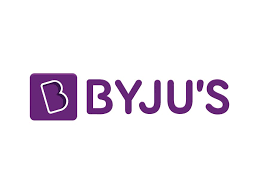
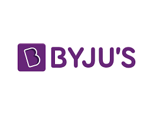
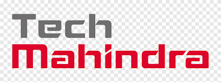
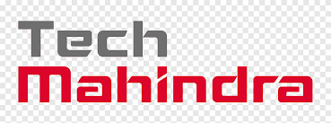

The placement rate for B. Tech students at Karpagam Academy
of Higher Education (KAHE)
is up to 93% in top 20+ companies in India.
Some of the top companies that recruited B. Tech
students during
KAHE placements 2023 were Infosys, HCL, TCS, Wipro, among others
 

 
